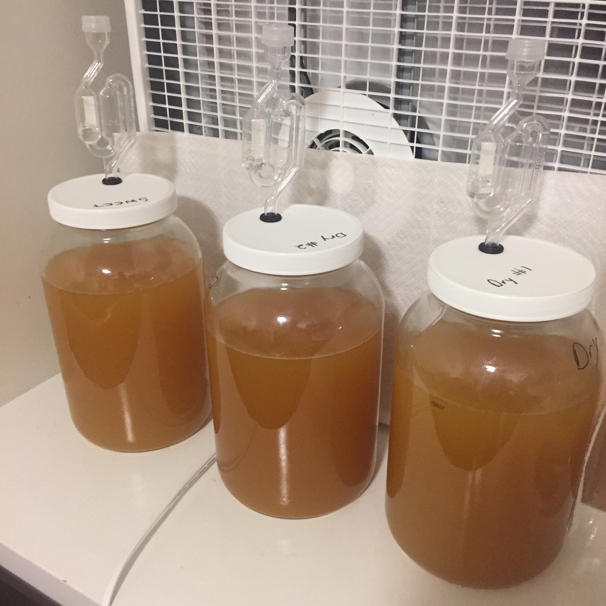

Mead Brewing
Fermenting honey to make wine

In fall 2019, since I was turning 21, I decided to experiment with making my own wine. This is something my grandfather had done for a while, but he makes proper red wine, and I was just going to attempt a far simpler kind of wine; Mead. Mead is a wine made from honey, and is perhaps the easiest fermented beverage to make. I found some rough numbers online, and settled on how much honey and how much water to use for my mead. After that I just mixed in some yeast and nutrients, and let it sit. Once the alcohol content got up around 14%, the yeast mostly died and settled to the bottom (this took about 1 month), so at that point I "racked" the wine, which just means I transfered it to another container and got rid of all the dead yeast sediment. After this, I added a small amount of bentonite clay to force any suspended solids to flocculate and settle, clarifying the mead.